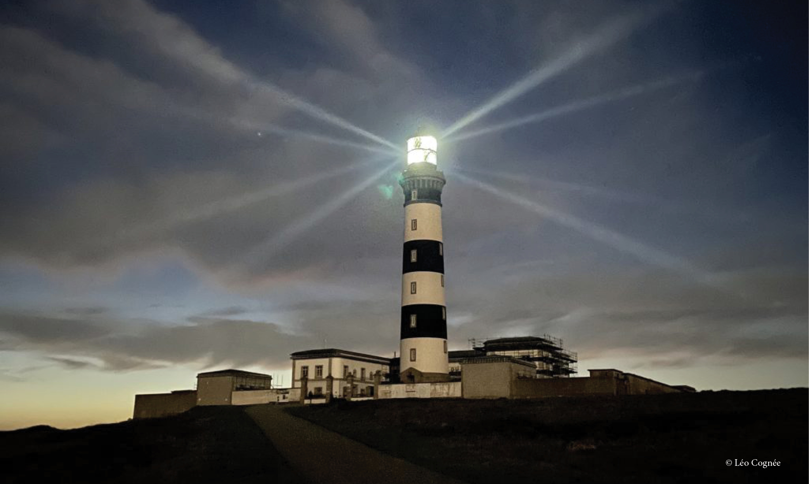

En el extremo occidental de Francia, en el corazón de las poderosas aguas del Atlántico, la isla de Ouessant se alza como una última atalaya antes de la inmensidad oceánica. Esta tierra salvaje y majestuosa encarna la fuerza del vínculo entre el ser humano y el mar, pero también una historia técnica única. Por la excepcional concentración de faros, marcas terrestres de navegación, señales sonoras y dispositivos modernos de ayuda a la navegación que reúne, Ouessant constituye uno de los territorios más emblemáticos de la historia francesa de la señalización marítima. El faro de Créac’h, La Jument, Kéréon, Nividic y el Stiff forman un conjunto patrimonial y técnico poco común, donde la innovación marítima se ha desarrollado en contacto directo con algunas de las condiciones más exigentes.
Situada en la entrada occidental del Canal de la Mancha, en la confluencia entre el Atlántico y una de las grandes rutas de navegación europeas, Ouessant ocupa una posición estratégica para la seguridad marítima. Las aguas que la rodean están marcadas por corrientes poderosas, condiciones meteorológicas a menudo difíciles y una elevada densidad de tráfico. El dispositivo de separación del tráfico de Ouessant, destinado a organizar y asegurar la circulación en esta zona sensible, registra el tránsito de unos 150 buques al día, según los periodos y los perímetros de cómputo considerados.
Esta situación exige una necesidad permanente de balizamiento y seguridad. Desde el siglo XIX, las aguas próximas a Ouessant se convirtieron en un sector clave para la señalización marítima francesa. Los dispositivos luminosos, sonoros y, posteriormente, radioeléctricos desplegados en la zona reflejan una búsqueda constante de fiabilidad en un entorno donde la precisión de la señal puede resultar decisiva.
Antes de la generalización de los faros modernos, los marinos se orientaban gracias a referencias naturales o construidas, conocidas como marcas terrestres de navegación. En Ouessant, varias de estas marcas sirvieron para facilitar la navegación. La pirámide de Runiou, situada en la punta de Porz Doun, permitía en particular realizar alineaciones visuales con el campanario de la iglesia y con la roca pintada de blanco de la punta de Pern.
La construcción del faro del Stiff a finales del siglo XVII marcó una etapa decisiva. Tras una visita a la isla en 1685, Vauban propuso la construcción de una torre destinada a señalizar los peligros situados al noroeste de Brest. La torre del Stiff fue finalmente construida en 1699. A día de hoy, este faro sigue siendo uno de los más antiguos de Francia aún en servicio. Permite guiar a los navegantes procedentes de alta mar, del norte de Finisterre o con destino a Ouessant.
Con el auge del comercio marítimo, las aguas próximas a Ouessant se convirtieron en un sector estratégico para asegurar el acceso al Canal de la Mancha. El dispositivo moderno de separación del tráfico, conocido como el rail de Ouessant, prolongaría más tarde esta lógica de seguridad a escala del tráfico internacional. Pero ya en el siglo XIX, la construcción del faro de Créac’h ilustraba esta creciente importancia de la señalización marítima.
Puesto en servicio en 1863, el faro de Créac’h señala, junto con el faro de Bishop Rock en Inglaterra, la entrada del Canal de la Mancha para los buques procedentes del Atlántico. Su luz blanca, con dos destellos agrupados cada diez segundos, cuenta actualmente con un alcance nominal de 30 millas náuticas, es decir, aproximadamente 55,6 km. Durante mucho tiempo fue uno de los faros más potentes del mundo y sigue siendo uno de los grandes símbolos de la ingeniería de faros.
El alcance excepcional del Créac’h se basa en una óptica monumental fundada en los principios de las lentes de Fresnel. Su sistema actual comprende cuatro lentes, cada una compuesta por dos paneles de 2/9, con una distancia focal de 0,65 metros. Su disposición en dos niveles es única en su género. La iluminación está garantizada actualmente por cuatro lámparas halógenas de halogenuros metálicos de alta potencia de 2.000 vatios.
La linterna del Créac’h, presentada en la Exposición Universal de París de 1937, fue instalada en el faro a finales de la década de 1930. Contribuyó entonces a convertir el Créac’h en el faro más potente del mundo. El edificio está clasificado como monumento histórico desde el 23 de mayo de 2011.
Esta óptica monumental, con un peso de 17 toneladas, sigue descansando sobre un baño de 85 litros de mercurio. Este dispositivo, notable desde el punto de vista técnico, plantea hoy retos sanitarios y medioambientales. El Estado francés ha iniciado un proceso de retirada progresiva del mercurio de los faros marítimos franceses de aquí a 2030, al tiempo que busca para el Créac’h una solución capaz de preservar tanto la seguridad marítima como la identidad patrimonial de su firma luminosa.
En las nieblas frecuentes que rodean Ouessant, las señales sonoras desempeñaron durante mucho tiempo un papel esencial. En el Créac’h, se instaló una trompeta sonora de aire comprimido en la punta de Pern para complementar la señal luminosa cuando esta quedaba oculta por la bruma. Con el paso del tiempo, distintos sistemas sonoros se sucedieron al ritmo de la evolución técnica.
La memoria de estos dispositivos aún es visible en la isla. En la punta de Pern, el ayuntamiento de Ouessant menciona las ruinas de una antigua sirena de niebla accionada por vapor, en funcionamiento entre 1885 y 1900. Otros equipos, como las campanas submarinas o los radiofaros, también participaron en esta historia de la señalización sonora y radioeléctrica. Estos dispositivos fueron perdiendo progresivamente su papel central con el desarrollo del radiofaro, la radiogoniometría y, posteriormente, los sistemas modernos de vigilancia y navegación.
El siglo XX marcó un avance espectacular en la conquista de las zonas más hostiles del litoral de Ouessant. La construcción de faros en el mar sobre arrecifes aislados demuestra un alto nivel de pericia marítima, combinando robustez, innovación y adaptación a condiciones ambientales extremas. Tres realizaciones emblemáticas ilustran este periodo: La Jument, Kéréon y Nividic.
El faro de La Jument está situado en las inmediaciones suroccidentales de la isla de Ouessant, en el extremo suroeste del paso del Fromveur, sobre la roca de La Jument. Este enclave, considerado especialmente peligroso, fue elegido a comienzos del siglo XX como una de las grandes obras en el mar dentro del sistema de balizamiento de los accesos a Ouessant. La luz se encendió por primera vez el 15 de octubre de 1911.
La estructura alcanza una altura de 47,40 metros. Su luz actual es roja, producida por una linterna LED de 3 x 12 vatios, con tres destellos agrupados cada 12 segundos y un alcance de 10 millas náuticas. El faro está automatizado desde 1991. En 2015 se retiró la cuba de mercurio y se instaló una luz LED. En 2023, el faro fue solarizado mediante la instalación de paneles solares, conservando al mismo tiempo un grupo electrógeno de respaldo.
La Jument también entró en la cultura popular gracias a la célebre fotografía tomada por Jean Guichard el 21 de diciembre de 1989, en la que se ve el faro golpeado por una ola gigantesca mientras el farero aparece en el marco de la puerta. Esta imagen contribuyó a convertir La Jument en uno de los símbolos más poderosos de la vida de los fareros frente al mar.
Situado al sureste de la isla de Ouessant, en el paso del Fromveur, al noroeste de la isla de Bannec, el faro de Kéréon se levanta sobre la roca Men-Tensel. Fue concebido para asegurar la navegación nocturna en uno de los sectores más temidos del mar de Iroise.
Con una altura de 47,25 metros, Kéréon es también uno de los faros en el mar más lujosamente acondicionados. Su escalera, sus mosaicos, sus revestimientos de roble de Hungría y su suelo decorado con una rosa de los vientos en ébano y caoba le otorgan un lugar singular en el patrimonio marítimo francés. La DIRM lo presenta como el último “faro monumento” construido en el mar.
Su luz actual presenta 2+1 ocultaciones, con un sector blanco de 17 millas náuticas de alcance y un sector rojo de 14 millas. Funciona con una lámpara LED de 35 vatios y una óptica fija de vidrio tallado con una distancia focal de 0,92 metros. Desde el 29 de enero de 2004, el faro de Kéréon está completamente automatizado y telecontrolado.
El faro de Nividic, situado en el extremo de la punta de Pern, es una de las realizaciones más innovadoras de la historia de los faros franceses. Implantado sobre el arrecife de Men Garo, de muy difícil acceso por mar, fue concebido desde el origen como un faro automático en el mar, sin farero residente.
Los trabajos de cimentación se realizaron entre 1912 y 1915. La construcción de la torre comenzó en 1916 y finalizó en 1930. Posteriormente, se instaló una línea aérea desde la punta de Pern para transportar la energía necesaria para la alimentación de la luz, la señal sonora y los controles de automatización. Dos pilones intermedios, construidos en hormigón armado, servían de enlace entre la costa y el faro.
Este dispositivo también permitía transportar al personal de mantenimiento mediante una cabina suspendida. La instalación original incluía una luz eléctrica, una sirena de aire comprimido alimentada por electrocompresores y un cañón de acetileno como sistema de emergencia. Encendido en 1936, Nividic es presentado por la DIRM como el primer faro automático en el mar y como una realización técnica excepcional para su época. Desde 1996, su luz está equipada con paneles solares y ya no cuenta con señal de niebla.
La vida de los fareros estaba marcada por el aislamiento, la disciplina técnica y la confrontación permanente con los elementos. En Ouessant, los faros en el mar exigían una vigilancia constante: supervisión de la luz, mantenimiento de las ópticas, control de las máquinas y relevos difíciles con mal tiempo. Las familias y las comunidades insulares también formaron parte de esta historia, cuya memoria conserva hoy el Museo de Faros y Balizas.
Instalado en la antigua central eléctrica del Créac’h, este museo recorre la evolución de las ayudas a la navegación y conserva un patrimonio excepcional vinculado a los faros, las ópticas, las luces y los dispositivos de señalización marítima.
A partir de finales del siglo XX, los faros de Ouessant fueron progresivamente automatizados, telecontrolados e integrados en una lógica de supervisión centralizada. El Créac’h desempeña hoy un papel clave en este dispositivo: ocho agentes se encargan de su mantenimiento y del seguimiento del telecontrol del conjunto de los establecimientos de señalización marítima de Finisterre, con una vigilancia permanente las 24 horas.
La modernización no adopta una única forma. Algunos fuegos en el mar han sido equipados con soluciones LED y sistemas de alimentación autónoma, especialmente solares. La Jument recibió así una luz LED y fue solarizada en 2023. Nividic funciona con paneles solares desde 1996. El Créac’h, en cambio, conserva una óptica histórica alimentada por cuatro lámparas halógenas de halogenuros metálicos de alta potencia, cuya rotación sigue dependiendo de un baño de mercurio.
Esta transición ilustra el reto contemporáneo de la señalización marítima: modernizar los equipos, reducir los riesgos medioambientales, optimizar el mantenimiento y preservar el valor patrimonial de los grandes faros históricos.
La señalización marítima moderna ya no se basa únicamente en luces visibles o señales sonoras. Hoy se integra en un ecosistema de vigilancia e información que incluye radares, AIS, telecontrol y sistemas de tráfico marítimo.
Frente a Ouessant, la vigilancia del dispositivo de separación del tráfico está a cargo del CROSS Corsen, que ejerce una misión de servicio de tráfico marítimo en una zona circular de 40 millas náuticas alrededor de la isla. Supervisa el dispositivo de separación del tráfico situado frente a Ouessant, recibe y explota los informes obligatorios transmitidos por los buques, proporciona información de seguridad e interviene en caso de riesgo de abordaje.
Las ayudas a la navegación también pueden reforzarse mediante dispositivos AIS AtoN. Estos sistemas permiten, entre otras funciones, mejorar la identificación de una ayuda a la navegación, transmitir su posición a los equipos electrónicos de los buques, verificar su integridad o señalar un desplazamiento respecto a su posición nominal. Conviene hablar aquí de AIS AtoN, y no de AIS clase B+, ya que esta última noción se refiere a equipos AIS utilizados por determinados buques y no al balizamiento marítimo.
Estos dispositivos se inscriben en las recomendaciones de la IALA/AISM y en el marco náutico y técnico francés aplicable al balizamiento marítimo. Prolongan, en forma digital, la misión histórica de los faros: hacer que el peligro sea visible, identificable y comprensible para los navegantes.
Hoy, Ouessant sigue siendo un territorio de referencia para comprender la evolución de las ayudas a la navegación. Desde las marcas terrestres tradicionales hasta las ópticas monumentales, desde las sirenas de niebla hasta los radiofaros, desde los faros en el mar hasta los dispositivos AIS AtoN, la isla concentra varios siglos de historia técnica marítima.
Para Gisman, Ouessant constituye un verdadero caso de estudio: concebida para condiciones extremas, la señalización marítima en este territorio siempre ha tenido que responder a una exigencia absoluta de robustez, visibilidad, fiabilidad y continuidad de servicio. La historia de la isla recuerda que cada ayuda a la navegación, ya sea luminosa, sonora, radioeléctrica o conectada, responde a una misma misión: hacer más segura la mar y acompañar a los navegantes en los entornos más exigentes.
Ouessant encarna la excelencia marítima francesa. De la pirámide de Runiou al faro del Stiff, del Créac’h a La Jument, de Kéréon a Nividic, la isla narra la evolución completa de la señalización marítima: primero visual, después luminosa, sonora, radioeléctrica y, hoy, conectada.
Centinela del Atlántico y puerta occidental del Canal de la Mancha, Ouessant sigue siendo un símbolo vivo de la adaptación humana a los desafíos del mar. Su patrimonio recuerda que la innovación marítima nunca es abstracta: nace de la realidad, de las corrientes, la niebla, los arrecifes, los naufragios evitados y la necesidad permanente de guiar a los buques con precisión.
← Volver al blog